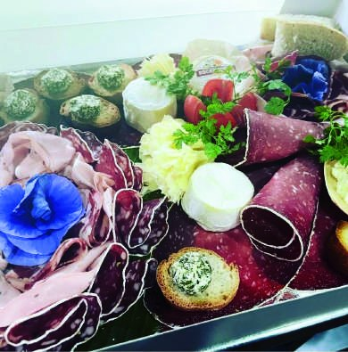
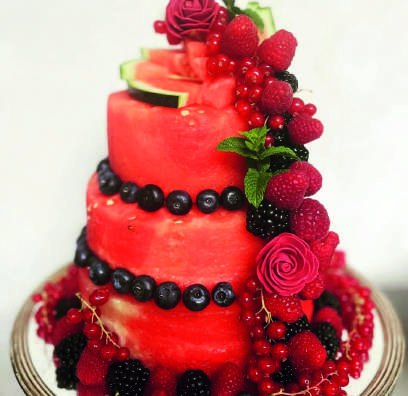

SophieCheffe & fondatrice


Notre histoire
Une cuisine
d’émotion.
Diplômée et forte de plus de vingt ans d’expérience auprès de chefs renommés, Sophie imagine et orchestre des réceptions élégantes où la cuisine, l’organisation et le sens du détail ne font qu’un.
Elle propose une approche globale de l’événement, alliant gastronomie raffinée, créativité et mise en scène soignée, avec une attention particulière portée aux produits frais et de saison du Haut-Var.
De la cuisine au service, en passant par la coordination et l’harmonie de l’ensemble, chaque détail est pensé pour sublimer votre événement, dans le respect de vos envies et de votre budget.
« Chaque réception est conçue comme une expérience complète : une cuisine d’émotion, une organisation maîtrisée et une ambiance élégante. »
20+ans
d’expérience
d’expérience
100 %produits frais
& de saison
& de saison
7 hde service
inclus
inclus